Comme un réveil qui tourne rond, le démarrage du moteur me tire de mon sommeil. Quand je sors, je suis d’abord frappé par la douceur de l’air puis par les cris de Loann et Clément. L’accélération subite du vent à l’approche de l’archipel les a quelque peu surpris. Nous affalons les voiles sans encombre et nous rapprochons de Playa Francesca. Nous ne sommes pas les seuls à jeter l’ancre sur l’île de La Graciosa, au nord de Lanzarote. Le vent souffle sur le mouillage, nous nous y reprenons à deux fois pour poser l’ancre. Une fois celle-ci sécurisée, Clément se précipite pour mettre sa wing à l’eau et je le suis en gréant la planche à voile. Nous tirons nos bords dans le mouillage et entre les îles. Loann part explorer les fonds marins.
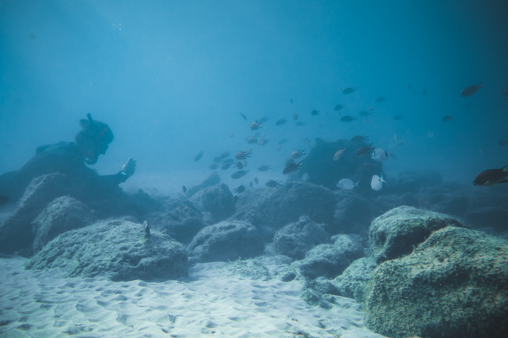
Le lendemain, la brise n’a pas molli et Loann est d’attaque pour tenter ses premiers bords de wing. Nous rejoignons tous les trois la plage en annexe et je regarde Loann manipuler son aile sous les yeux attentifs de Clément. Élève et professeur se mettent à l’eau et je pars découvrir l’île. Je longe la côte sur la plage. Le soleil tape sur les roches noires disséminées dans le sable. Heureusement, le vent rend l’atmosphère supportable. Le temps de prendre quelques photos et je rentre à la plage. Clément me ramène au bateau en annexe et retourne chercher Loann qui dérive sur sa wing. Après le déjeuner, nous allons tous les trois explorer la côte à la nage. Nous observons plusieurs espèces que nous connaissons et un requin ange : une espèce rare et en danger. Plutôt que de ranger le caisson étanche, je propose à Clément de le photographier en wing depuis l’eau. La lumière descend et se réchauffe, je me précipite à bord pour lancer le drone à sa poursuite. Peu familier avec son maniement, je me félicite de faire des travelling dignes des meilleurs pilotes ! Loann me rejoint pendant le vol, satisfait de ses progrès.
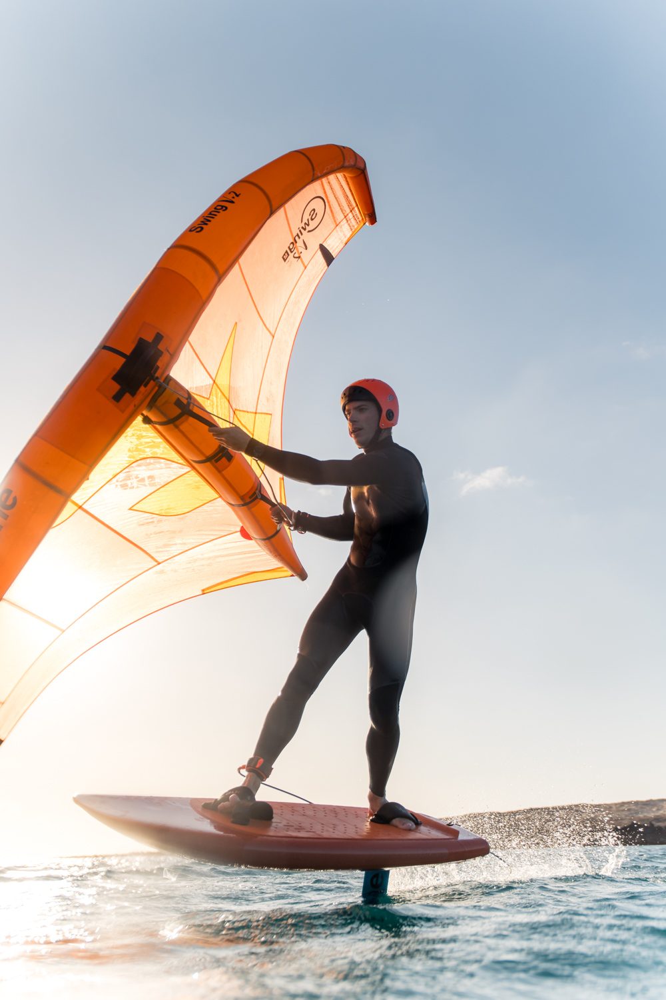
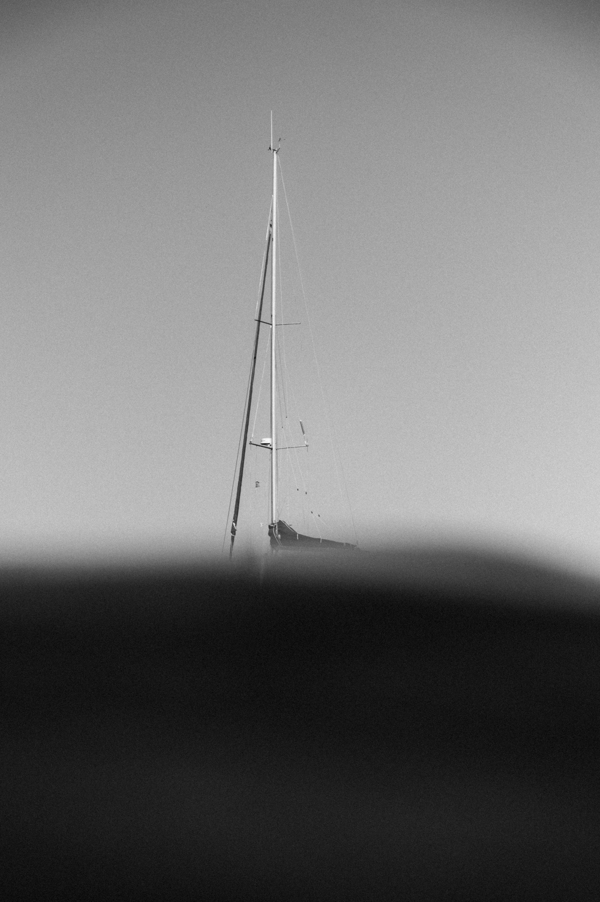
Nous quittons le mouillage le lendemain et longeons Lanzarote jusqu’au nord de Fuerteventura. Le spi nous amène doucement vers l’île de Los Lobos, “les loups” en espagnol, en référence aux phoques qu’on peut y observer. L’île est une réserve naturelle et l’heure avancée nous en offre l’exclusivité. Nous zigzaguons dans les champs de pierres volcaniques entourés de nuées de goélands. Nous nous arrêtons à la pointe sud-est de l’île pour savourer un apéritif devant le phare de l’île. Le coucher de soleil offre de beaux contrastes entre le sable blanc, les pierres noires et les nuages rosis par les dernières lueurs.
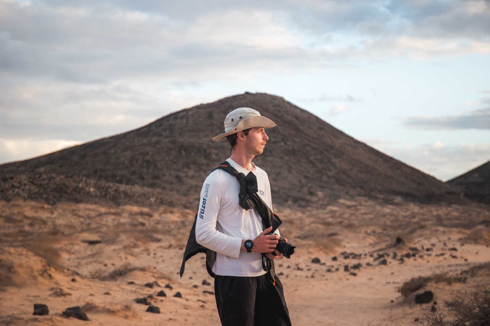
De retour au bateau, nous dînons avant de mettre les voiles pour Tenerife. Le début de navigation se fait dans une petite brise et sans vague, Tsanteleina glisse sous la pleine lune. Je fais mon quart jusqu'à 2h du matin puis vais me coucher. Je suis réveillé par des coups sourds contre le plafond de ma cabine. Je ne sais pas quelle heure il est, ni où nous sommes, et encore moins ce qui se passe. Je pense d’abord que c'est le palan d’écoute qui s’est détaché mais les bruits sont trop sourds. Je me hisse pour voir dans le cockpit, Loann bondit de sa cabine et j’entends des bruits de lutte. Quelques minutes plus tard, les bruits s’arrêtent avec les derniers soubresauts de la dorade coryphène pêchée par Clément. Avec prêt d’un mètre et pas loin de 8 kilos, c’est à ce jour le plus gros poisson que nous ayons péché. Nous en mangerons pendant 4 jours, midi et soir.
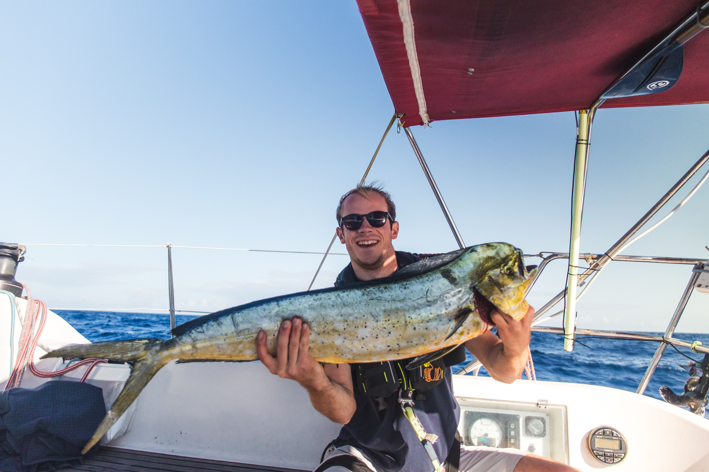
Pour notre arrivée à Tenerife, le port nous refuse l’entrée et nous visons un mouillage un peu plus au nord. Entourés de falaises, nous voilà bloqués pour trois jours. Heureusement, la clarté de l’eau et les fonds marins sauront nous occuper. Un premier repérage nous permettra de préparer une seconde plongée dédiée à la vidéo. Nous nous inspirons de films d’apnéiste pour filmer Loann se mouvoir dans l’eau. Baia de Antequera se révélera finalement une pause bienvenue dans notre périple que nous sommes contraint de quitter, nos réservoirs d’eau étant presque vides.
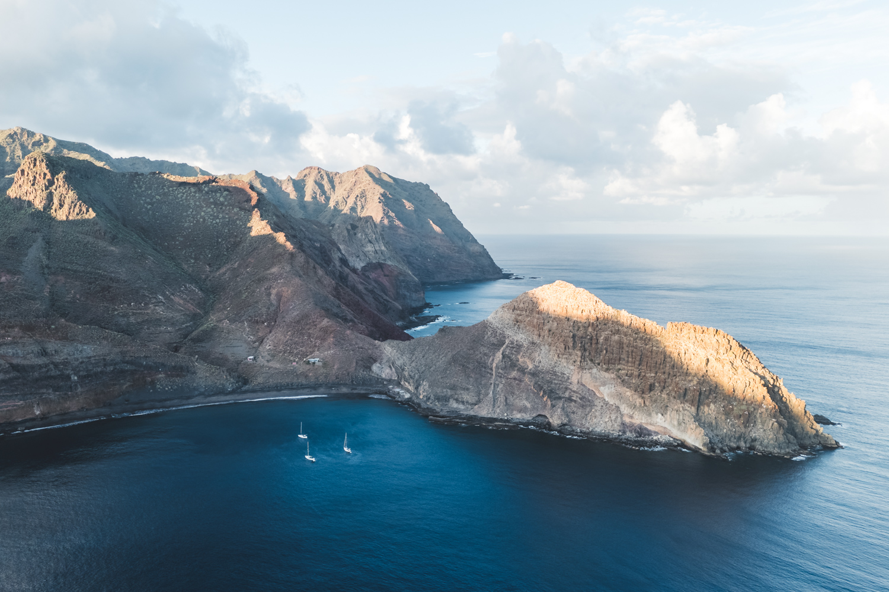
Une petite dizaine d’appels au port de Santa Cruz suffiront à les convaincre de nous offrir une place pour la nuit. Nous y retrouvons plusieurs équipages participant à la mission de Nav’Solidaire. Nous allons tous dîner en ville pour échanger sur nos projets respectifs. Un passage à la capitainerie nous permet de prolonger notre séjour à 4 jours. Notre objectif était d’y rester une semaine pour faire quelques travaux : des optimisations et des choix vont devoir être faits… Réparation du génois, achat de pièces détachées et avitaillement de conserves en quantité rempliront nos journées. Fatigués, nous retournons à la capitainerie demander quelques jours de plus pour finir nos travaux. Nous obtenons l’autorisation de rester deux jours de plus.
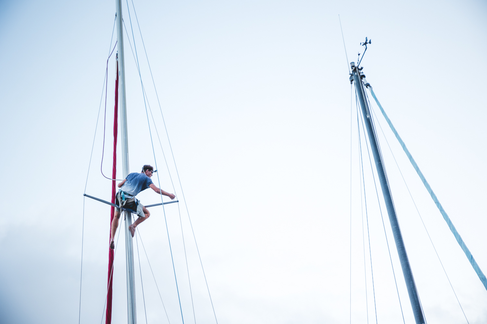
Nous en avons marre de rester au bateau au port à bricoler et décidons de tenter l’ascension du Teide le surlendemain matin. Avec ses 3715m d’altitude, ce volcan est la plus haute montagne de l’Atlantique et son ascension doit être préparée. De la location d’une voiture au choix des vêtements chauds en passant par l’étude des itinéraires, nous sommes enthousiasmés à l’idée de découvrir le lever de soleil au sommet. En effet, un permis est nécessaire pour accéder aux dernières centaines de mètres et son obtention doit être anticipée. La combine consiste à partir tôt le matin pour monter en haut, observer le lever du soleil et redescendre avant l’arrivée des gardes qui vérifient les permis. Nous ne sommes pas des brigands en devenir, c’est une pratique répandue chez les randonneurs pour accéder au sommet.
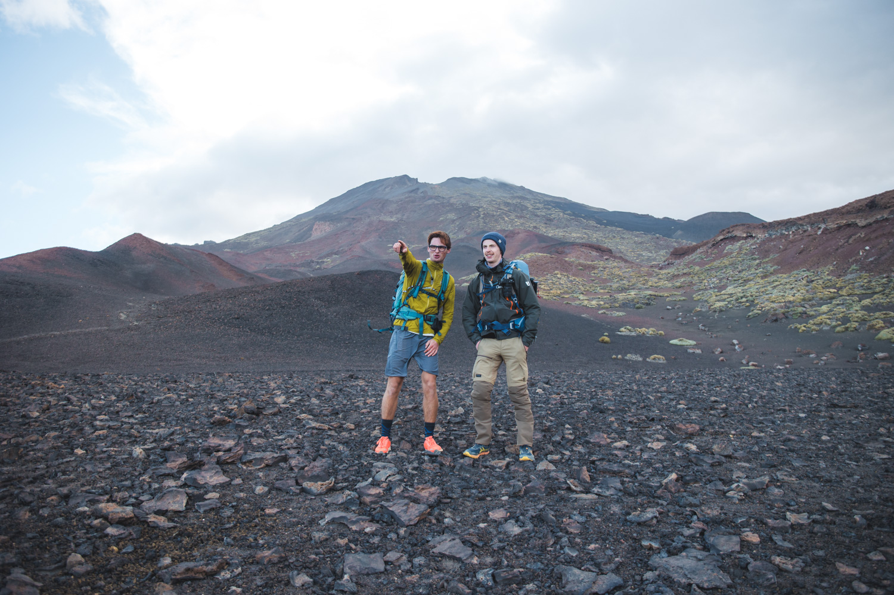
Partis à 0h40, nous serons contraints de changer nos plans en arrivant au pied du Teide. Le récit détaillé de cette ascension est à découvrir dans notre prochain article (à paraitre).
De retour au port, nous profitons de la dernière demi-journée pour nous reposer et acheter les derniers éléments qui nous manquent. Les prévisions météorologiques se contredisent et ne nous aident pas à planifier la suite de notre itinéraire. Nous savons que nous voulons rejoindre La Gomera et que la navigation durera deux jours. Nous repérons quelques mouillages où jeter l’ancre sur la route sans savoir quel modèle météorologique croire. Nous mettons les voiles dans la matinée. Enfin, une voile pour aider le moteur à passer le clapot dans du vent léger. Je déroule les lignes de pêche et nous observons les paysages défiler. Quelques heures plus tard, nous remontons les lignes car une petite bonite a mordu. Nous avons pour tradition d’attribuer les prises à celui qui a déroulé la ligne. Cette bonite est donc le premier poisson que je pêche… de ma vie ! Nous la relâchons car elle nous paraît trop petite pour faire un repas. Certains diront que c’est surtout parce que nous croyons pouvoir en pêcher une plus grosse sur la suite de la navigation… La vérité se trouve probablement entre les deux.
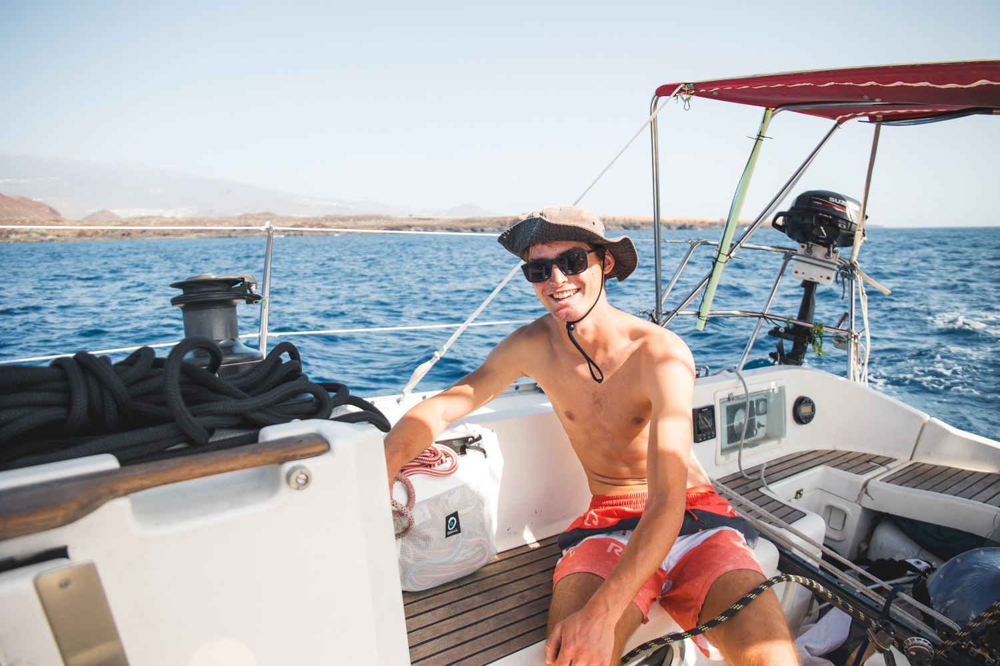
Nous dînons après le coucher du soleil et arrivons en milieu de soirée dans notre mouillage. Une belle montagne se dresse sur Punta Roja et nous nous abritons du vent derrière elle. La matinée du lendemain se fait aussi au moteur jusqu’à ce que nous soyons entre les îles de Tenerife et de La Gomera. Malgré le vent faible, le bateau glisse tranquillement vers son objectif. Un magnifique coucher de soleil sur le Teide clôt la journée. Nous l’observons depuis le bateau ancré à Playa Avalo.
Mes jambes me démangent alors je pars courir le lendemain matin. Je gonfle le paddle, mets mes affaires dans un sac étanche et file vers la plage. Je longe la côte sur un chemin à flanc de montagne, obstrué par des chutes de rochers et parcouru par des troupeaux de chèvres. Je redescends vers une petite chapelle blanche construite sur une pointe. Des vagues déferlent autour. Je les filme pour les montrer à Clément et Loann qui sont désespérément à la recherche de vagues à surfer. En rentrant au bateau, je retrouve Loann qui revient d’une exploration des fonds marins. Il avait repéré un rocher affleurant à quelques centaines de mètres de la côte. Dépité, il l’a cherché sans le trouver pendant quelques heures. Nous y retournons le lendemain en annexe et profitons d’une belle plongée malgré un courant important.
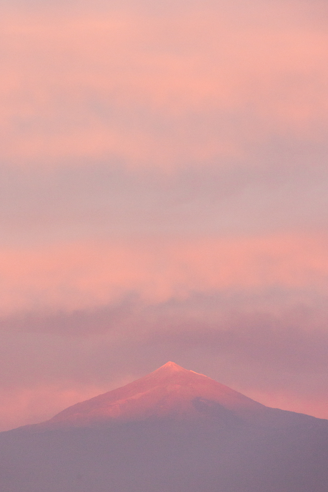
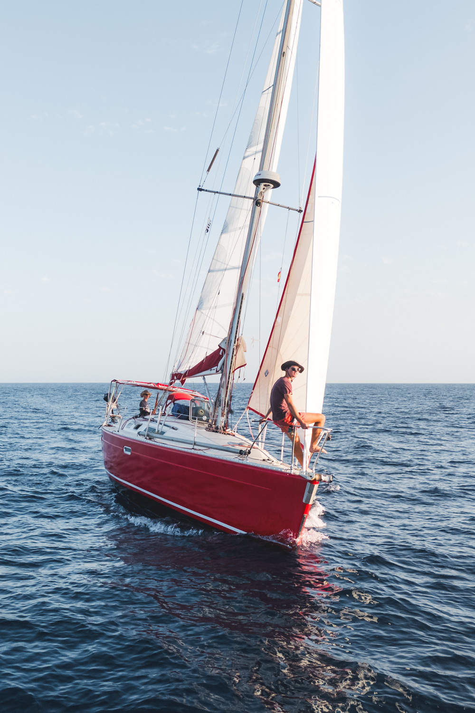
Nous sommes dimanche et partons en ville faire des courses. Cela peut paraître une mauvaise idée de chercher des magasins ouverts sur une île le septième jour de la semaine. C’est une mauvaise idée. Nous visitons tout de même San Sebastian après une marche de 6km et réservons une place de port pour la semaine suivante. Heureusement, Miguel nous prend en stop pour le retour et nous évite de prendre une belle averse sur la tête. Il est le premier habitant que nous rencontrons lors de notre périple et nous échangeons quelques mots sur nos vies respectives.
Nous nous déplaçons dans un mouillage au sud du port et tentons de pêcher depuis le bateau. Le lendemain, je vais en annexe à la côte pour tenter de prendre un poisson. Je pêche un poisson venimeux avant de coincer ma ligne sous un rocher. À nouveau une décision contestable. Un choix plus raisonnable fut de filmer les interviews pour notre seconde vidéo YouTube le lendemain matin.
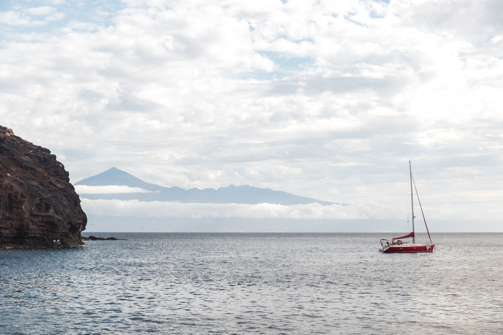
Dernier mouillage de La Gomera juste après la pointe sud, nous jetons l’ancre entre des falaises à pic. Une petite usine abandonnée est construite au-dessus de la plage de galets qui ferme l’anse. Comme toujours aux Canaries, la houle entre dans la crique et nous nous faisons ballotter par les vagues. Loann part à la recherche de vie sous-marine et je tente de pêcher de nouveau depuis le bateau.
Les deux jours suivants nous permettent d’affiner notre check-list de port. Lessive, check. Plein des réservoirs, check. Courses, check. Remplacement des bouteilles de gaz, check. Courses, check. Cernes sous les yeux, check.
Notre départ vers les Cap-Vert se dessine et nous décidons de dormir à El Hierro pour notre dernière nuit dans l’archipel. Pour occuper la navigation, le leurre se coince dans le fil, tourne sur lui-même et emmêle la ligne. Une bonne heure de travail nous permettra de venir à bout des centaines de boucles formées. Aucunement découragé, je remets la ligne à l’eau avec notre leurre le plus performant. Quinze minutes plus tard, une dorade coryphène mord et je célèbre ma première prise. Loann m'apprend patiemment à vider le poisson et à lever les filets. Nous sommes interrompues par un grand banc de dauphins qui vient jouer le long du bateau. Nous arrivons dans la soirée au port de El Hierro, à moitié vide et bien calme. Nous repartons le lendemain plein de regrets de ne pas avoir passé plus de temps sur cette île.
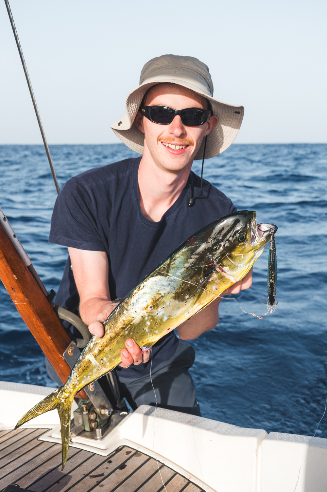
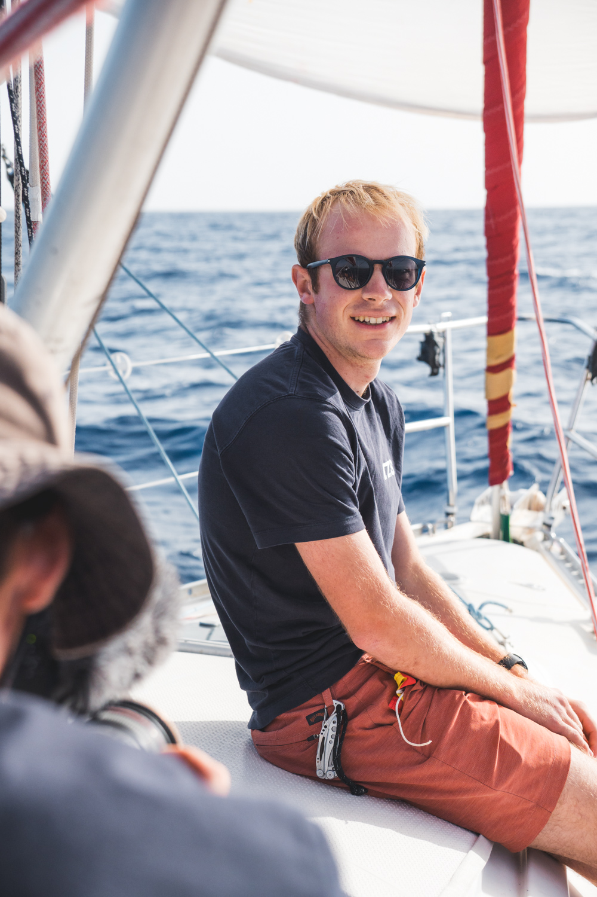